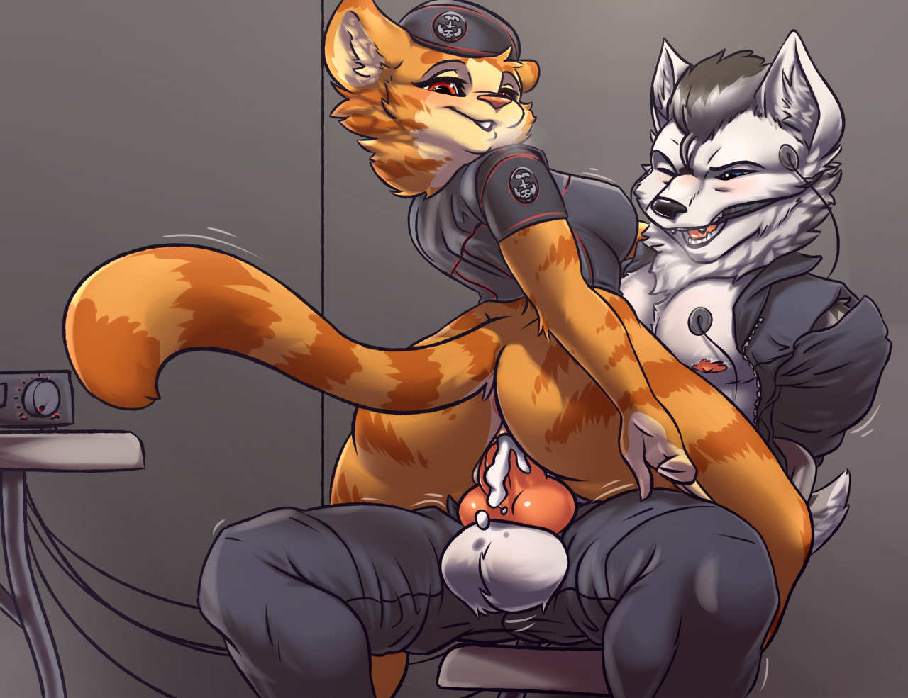

The Moment of Truth
Written by TwistedSnakes
Illustrated by FriskalPox

There was a soft thud as a blur of black and white jumped into a dark corridor from a hole in the ceiling before doing a forward roll and pressing himself against the slick, grey panels that lined the narrow corridor.
The figure held his breath as a group of two armoured guards patrolled down an adjacent corridor. Once the sound of stomping boots faded away into the distance, he stepped out of the shadows, revealing an arctic wolf dressed in a dark uniform that emphasized his muscular form. A utility pouch hung from his shoulder like a sling bag and a black bandana was tied around his neck. His pelt was white except for the shades of grey that ran from the top of his head down his back and a grey dot between the eyes.
His name was Decro, but not a single shred of identification could be found on his body: it wouldn't do him any good if he were caught in the research base of the enemy forces. He was here on a mission to infiltrate the research laboratories to retrieve intelligence on the top-secret formula that the enemy was developing. If all went well today, he would be going home with notes from their experiments and maybe even a sample. But for now, he'd have to stay focused on the mission.
With silent footsteps, Decro swiftly followed the corridor in the opposite direction from the guards and turned down the left passageway when it came to a junction. He had memorized every nook and cranny of the base from the blueprints that the intelligence department had procured for him to the point that navigating the building was like returning to an old home. He went down another corridor and hid in the recess of a metal door as he waited for the next patrol to come.
Sure enough, two more guards marched their way down the adjacent corridor into the one Decro was in. They looked left and right before they turned away and continued their patrol in the opposite direction. Once they had disappeared around the next corner, the wolf was out running again with his fluffy tail behind him.
The map in his mind informed him that he was close. Sure enough, the next junction led down a corridor to a dead end where horizontal red lasers formed a barrier in front of a doorway. A pale blue panel was beside the entryway, acting as a high-security gate that eliminated the need for guards.
Decro cautiously approached the panel. Sensors detected his presence and the panel lit up brightly. "Level ten authorization required," read a voice. "Please identify yourself." The outline of a handprint and two slots appeared on the blue panel. The upper slot revealed a tiny, circular camera lens and the lower slot expected a keycard.
Without hesitating, the wolf took out a tiny box where a contact lens sat in a liquid solution. He gently picked it up and opened his eyes wide as he nudged the piece of glass onto the cornea of his right eye, making him indistinguishable from another researcher in the laboratories, at least to the identification system. He put on another glove which was an exact replica of the same researcher's paw and took a pale white access card out of the utility pouch that hung around his waist.
Decro peered into the upper slot, allowing the camera to perform a retinal scan on his eyes as he pressed his gloved hand on the panel and pushed the card into the card slot with his other hand. There was a second as the system attempted to identify him. The wolf breathed heavily. If the identification system did not recognize him, this mission would end with an entire platoon of guards surrounding him, alerted by the security mechanisms in the panel.
There were three beeps and the lasers faded away, leaving behind warm air in its wake. It worked. Decro pocketed the glove and took the contact lens out of his eye as he strode down the corridor. Unlike the rest of the facility, this corridor had large and wide glass windows that allowed one to look into the rooms beyond the heavy metal doors where scientific equipment filled each experimental laboratory.
But those were not the room he was looking for. Instead, he made his way to the end of the corridor where a huge door stood. The door was made out of many plates of reinforced steel, interlocking together with weaving bars that were impervious to brute-force attempts to open it.
Decro pushed the access pass into the waiting slot beside the door and pulled it out again. There was a loud hiss and the sound of heavy gears turning as the metal bars in the door retracted and the plates that made up the door slid apart and opening up the entryway into a huge chamber.
The wolf stepped into the large room. It looked like a chemical plant. A chemical-processing unit in the form of a steel cylinder rose towards the ceiling, covered with dials and pipes that led away to the ceiling. The central unit was surrounded by smaller processing machines and rows of desks circled the machines, each of them with a slim monitor, keyboard, and mouse sitting on it. Fume hoods and countertops lined the walls, and various scientific equipment such as microscopes, test tubes, and distillation cylinders were arranged neatly on the counters and in the glass-panelled fume hoods. It was in the middle of the night so as Decro expected, there was not a single scientist still in the chamber.
This was the place he was looking for. He made for the nearest computer and slotted a memory card into its CPU. Tapping the keyboard, he brought the monitor to life and began typing commands into the console. A prompt for the access code appeared and he keyed it in without pause, having already memorized the fourteen-digit code by heart.
With a tap of the enter key, the computer began its steady transfer of the entire repository of experimental notes into the tiny memory card. Years of well-hidden research about to be exposed to the enemy with just a few hours' of effort. Well, that and the years of military training that Decro had undergone. Still, the wolf felt a certain sense of satisfaction in his efforts. Now, if he could get his hands on a sample of the experimental formula, it would be the cherry on top of the cake. He looked around the laboratory for signs of a chemical storage apparatus.
Suddenly, hidden sirens in the room started blaring and a red beacon light engulfed the room with its spinning crimson beams. Damn it! He was caught! The metal door to the room began opening up slowly with a loud hiss. Decro yanked the memory card out of the slot and snapped it in half.
Troops poured into the room and surrounded him with their phasers aimed at him. The wolf was about to wipe the computer's console when a voice in a loudhailer instructed "Stop what you are doing! Hands in the air!" Decro paused for a moment before rising from the computer desk and turning around with his hands raised in a pose of surrender. At least thirty soldiers, armed and armoured, were focused on him, ready to fire at a moment's notice. His hand instinctively reached for his energy gun but he stopped himself in time. Would that have done any good against that many enemies? Probably not.
Decro grunted to himself. How did he get caught when he was so close to the end? Still, he had to prevent important intelligence from reaching the enemy. Intelligence that he knew. And if that meant he had to resort to drastic measures...
His tongue slowly inched to the back of his mouth. Behind his sharp teeth sat a smooth pill, innocently lodged in his gums. In the pill was white cyanide powder: a quick but painful way out of inescapable situations such as the one Decro now found himself in. His tongue tried to dislodge the pill but his half-open mouth gave him away.
"He's taking a pill!" shouted a guard. There was a loud crack as Decro's body was electrocuted with an excruciating amount of power from another guard's taser. He lost control of his legs and fell to the ground, twitching and convulsing, unable to reach the pill that would be his last relief. Instead, he could only shudder involuntarily as the soldier with the loudhailer stood over him with a stern look. The soldier raised his boots over Decro's head as he watched helplessly. There was a thud and the wolf was knocked unconscious.
A figure shuddered in the darkness, bound tightly to a steel-welded chair by thick ropes. Under the soft light that came from under the steel sliding doors, the figure's canine features could be distinguished. Decro had been here for two days now, tortured for information about his mission details and other military intelligence. Each day he kept silent and each day increasingly-intense pain was inflicted upon his battered body.
Light entered the room as the metal bars in the door slid away and the reinforced door slid aside. Decro seemed to stir from his slumber but that could not have been further from the truth: a number of electrodes all over his body, from his temples to his arms, from his chest to his legs were linked by wires to an electrical device which sent shocks all over his body, keeping him awake each night. He had been deprived of sleep in the past two days to the point that he'd fall asleep in the ten-second break between each round of shocks, only to be painfully awoken by another five minutes of pain as he shivered and struggled weakly against his restraints.
Physically weak and exhausted, he struggled to lift his head upwards to look at the person responsible for turning on the lights. Standing at the door was a tabby cat in her military uniform. Her fur was orange and yellow with darker accents that formed sharp stripes on her fur. Her bright fur contrasted her uniform which was black and grey except for strips of red that followed and emphasized the contours of her body. She was very well-endowed and her breasts pressed against the thick synthetic fabric of her uniform. The blouse of her uniform exposed her slender midriff which led down to her thick and shapely thighs and a beret sat on top of her head.
Wreath. That was her name. She had introduced herself to Decro on the first day of his torture and interrogation before asking for his name, which he promptly refused to give, earning him a strong punch to his jaw. Decro was expecting no different today.
The feline stepped over to him and stood over the bound canine. She smirked and raised her hand and Decro instinctively flinched. The blow, however, didn't come and she lowered her hand, amused at the wolf's fearful reaction.
"So, puppy," her hand grabbed the wolf's chin and forcefully yanked his head to look straight into her face. "Are you ready to...let the cat out of the bag?" She grinned at her pun as she pushed Decro's head away and he hung limply in his chair. Reacting to her taunts would only aggravate his situation. Not a smart thing to do at a time like this.
"No? Not even if I do a little of this?" she crouched down to where the power box sat and clicked the dial up a notch. There was a grunting sound as Decro clenched his teeth, trying to endure the additional volts without screaming out loud. He had to keep his pain in. Show the enemy no sign of weakness.
"I know for a fact that you're only mortal," Wreath clicked the dial up another notch.
"Hngg!" Decro gasped before clenching his teeth again.
"And mortals have their limits," she raised the power up another level and the wolf began shuddering in his chair.
"The question is, what's yours?" she turned the dial one more level and Decro began thrashing about in his chair, biting his lips as he tried to contain himself. The ropes cut into his skin as he struggled to break free.
Wreath watched the wolf's writhing, a combination of a futile attempt to escape and the natural reaction to twenty milliamperes of electricity surging through one's body. She couldn't deny that she was getting exasperated with the prisoner's resilience. The power box could only go up a few more levels before the current gets lethal for even a wolf of Decro's size, and a dead prisoner was a useless prisoner. She picked up the box in her hands and stood up beside the canine, careful not to touch the electrified wolf or she'd inadvertently get a taste of her own medicine.
With a quick flick, she turned the power down to zero and Decro panted as he took the time to recover.
"Are you ready to answer my questions?" she asked, trying to conceal her irritation with the coldness in her voice. The wolf's silent glare gave her the answer she needed. Annoyed, she twisted the dial up to the maximum she could safely go before she'd end up with nothing but roasted meat wrapped in burnt pelt sitting in the chair.
Screams of pain filled the room as Decro's writhing body strained against the ropes. Such a pathetic sight. A soldier fighting against the inevitable confession, enduring futile pain. She always got the information she wanted, even if she had to resort to extreme means. Wreath turned the power off and watched the wolf's feeble twitches.
"I can do this all day," Wreath gave the canine a dirty look. "Although based your past performance we both know that's not going to happen," she put the box down on the ground and stood up again.
"So," she continued, "we're going to try something a little different today. You were trying to steal the research notes to the serum we were developing, and you almost succeeded. I must admit though, I am personally quite impressed. So I want to...'reward' you with something." She waved her hand and as if on cue the cell door opened to let a red-scaled shark walk in, holding a tray with a syringe on it, filled with a dull blue liquid.
"Thank you, Tyraz," she picked up the syringe and waved the shark away. He exited through the door and it closed behind him and the sound of sliding metal indicated that the locking mechanism had shifted back into place.
Wreath examined the needle at the tip of the syringe and pushed a little on the plunger to expel the tiny air bubbles in the barrel, squirting a little of the blue chemical into the air. With a smug, grin she turned to the wolf who was watching her suspiciously.
"What's that?" he sneered.
"This?" she turned to the syringe in her hand in mock surprise, as if she was seeing it for the first time. "Oh, you mean this. This is the liquid you tried to steal from us, puppy." Decro furrowed his brows scornfully at the mention of the word "puppy" again but still kept his silence.
"And you know what? If you want it so badly, I'll just give it to you!" Without warning, she swung her hand down and stabbed the needle into Decro's neck and pushed the plunger. The wolf yelped in distress as the warmth of the searing pain was mixed with the cold and foreign liquid that was now flowing in his veins.
Decro panicked. "What was that?" he questioned the feline with a combination of apprehension and anger.
"A truth serum," she explained. "To make you talk."
Decro could already feel some of the cold liquid reach his brain and work its effects. His mind was beginning to cloud, making it hard for him to hold back the information he needed to keep secret.
"Gah! It's not gonna work on me!" Decro bluffed, holding on to the faint hope that he could resist the serum's influence.
"Are you so sure about that? Because your eyes are starting to glaze over," she waved her hand in front of Decro's head as his pupils followed. "And your shoulders are getting a little less tense," she put a firm hand on his broad shoulders and squeezed a little. As if to prove her wrong, Decro tensed up his body and struggled against the ropes binding him to the chair.
"No?" she grinned. "Let's try this again. What's your name?"
Decro's name floated to the top of his mind as if the serum was a dense fluid in his mind and his thoughts were like bubbles rising to the surface, ready to pop. His name was at the tip of his tongue but he shut his mouth and fought the feeling.
He shook his head and forced sharp "No!" out of his mouth before clamping his maw shut, afraid of saying anything else.
"Oh come on," Wreath purred. "You were so close, dear. Give it another go, what's your name?" She placed a gentle paw under the canine's jaw, close to the neck and gave it a soft squeeze. The feeling of warmth and intimacy drew his attention away.
"Decro," he admitted before he could stop himself.
"Decro? That's a nice name," Wreath cooed. "So, Decro," she placed a heavy emphasis on his name. "Who sent you?"
This time, the wolf was ready for her question. He focused his mind away from her caressing hand and stopped the thoughts from escaping his mouth in careless words. A mere grunt was all the reply the feline got.
Wreath hid her annoyance behind her stony face. After all, she had as long as she needed with the canine who had nowhere else to go. And with the lack of food, water, and sleep, Decro would slowly but surely be pushed to his physical limits. At that point, she'd be there. There to milk every last drop of information out of him. She let that idea sink in as she regained her composure. She couldn't let the wolf know that he was getting to her.
"I asked you a question, who sent you?" she sneered.
Decro protested again, a little weaker this time. The serum was working, but the wolf's resistance was getting in the way. Fortunately for her, she had something else up her sleeve. Leaning over the bound wolf, put her knee on his thigh and leaned her weight on it. Decro grunted as the pain shot through his body. Ignoring the canine's gasps of pain, Wreath unbuttoned the top button of her prisoner's shirt.
"You know what you need? You need a little bit of distraction to help work the serum in your system," she explained.
"What are you doing?" Decro spoke for the first time that day, but a well-aimed punch to his abs made him cough in pain before shutting up. The cat continued undoing the rest of the soldier's shirt buttons and tore it apart, revealing his sweaty and muscular chest beneath, rising and falling with his heavy and laboured breathing.
Two metal clips were clamped on his nipples and wires led out from it to the power box which was now turned off. Wreath slowly pulled on the wire leading to one of the clips, lightly tugging his nipples which were still sensitive from the electric shocks they were previously subjected to.
"Gnrr..." Decro clenched his teeth together as he resisted shouting out in anguish. Wreath released the wire before tugging on it again a few more times. Could she get the wolf to yell out loud? With a swift snap of her wrist, she yanked the wire away from his body and there was a click as the metal clip was pulled free of his nipple.
There was a strained whimper and Decro struggled against the ropes binding him to the metal chair. Not quite a shout yet. With two fingers she pressed on Decro's nipple and the wolf could feel a burning sensation as his sore skin ached under Wreath's firm fingers. Her sensual touch combined with the pain caused him to involuntarily turn his head to the side.
"Oh? You like that, don't you?" the cat taunted. Decro shook his head in protest but Wreath wasn't looking for a response either way. She leaned her face into his chest which, unlike the long and fluffy fur on his back, was short and pressed down from wearing his shirt. In a slow and deliberate manner, she stuck out her tongue and pressed the tip against his soft nipple.
"Ngnn..." he groaned as Wreath began licking his delicate flesh. Her warm and rough tongue gave his chest a mild scraping sensation and he couldn't stop himself from shuddering. The feline seemed to be enjoying herself too as she felt his warm flesh against her tongue.
She closed her mouth around the nipple and gave it a little suck, pulling it into her moist maw. A squeeze of her lips hugged his tender flesh and Decro made a soft, contented growl at the back of his throat. Smiling to herself, she gave the nipple a kiss before bringing her face up to Decro's, and the wolf could feel her warm breath on his skin.
"So," Wreath purred. "Ready to spill the beans? Who sent you?"
"I...I c-can't..." he resisted, looking at her with helpless eyes. His mind wanted to speak the truth, but he knew that he couldn't compromise everything their nation had worked for in the war. "Gnrr..." he groaned in anguish.
"Take your time, take your time," the feline sat on Decro's lap and leaned one shoulder against his hard pecs. Her hand moved to the wire connecting to the clip that was still on the wolf's other nipple.
"Like I said," she gave the wire a tug.
"Ngnn..." Decro groaned.
"I can do this all day," another tug on the wire, harder this time.
"Hnnft!"
"So if that's what it takes..." she pulled the wire outwards, this time not letting go as Decro's flesh was pinched by the sharp ends of the clip as the beneath skin turned red.
"A-ah!" Decro gasped out loud.
Wreath jerked the wire hard and Decro yelped in pain. The wire had snapped off in her hands, leaving the clip still on the wolf's nipple. Unfazed, the cat grabbed the clip and twisted it back and forth.
"Gnnggft!" Decro pleaded in his half-restrained grunts. He wasn't in a position to ask for anything but the sharp pain made him desperate. He was close to begging for mercy but that would mean he had to reveal everything. That thought alone was enough to make him shut up.
There was a snap and a tormented whimper as Wreath wrenched the clip off his nipple without releasing. The pain made Decro spasm and whine in agony but a soothing feeling of the feline's tongue on his nipple calmed him down again. She gave the nipple a peck with her lips before she sat up straight on his lap and put her hands on either side of the bound wolf.
"Hmm..." she studied Decro's facial expression. He was still resisting the serum's effects with his willpower. Something she had to rectify. With a bit more "encouragement", she was sure she could break his will.
She sat on Decro's lap so that her strong thighs were straddling his torso, filling the wolf's vision with the entirety of her generous chest. Decro blushed in embarrassment and turned away. Despite being on the opposing side of the war, he still stuck to his gentlemanly values when dealing with Wreath. Getting a full frontal view of a lady's bosom was crossing the line and he turned away bashfully.
Wreath, however, was getting none of that. The wolf's attempts at preserving her dignity were admirable but at the same time naive. The canine's innocence would only give her extra pleasure as she broke his will.
"Come here, puppy," Wreath instructed as she grabbed Decro's muzzle, holding it shut as she pulled it to the centre of her chest. She leaned into the wolf's face so that his muzzle was pressed between her two chest-cushions, separated only by her skin-tight uniform that left no space for imagination.
Was she not wearing her brassiere? Decro struggled in protest at the indignity and indecency but the feline was perfectly okay with the wolf getting a good feel of her lady parts. In fact, she was taking gratification as she felt him nuzzling around her valley as if the wolf was eager to satisfy her cravings.
But that statement could not have been further away from the truth. Decro didn't the idea of her squandering her femininity for such an unworthy cause. Unknown to him, Wreath was more than happy to do such a thing to break this canine down. Still, the wolf struggled in vain as he attempted to escape.
Her warm rack pressed against his cheeks as he moved around and Decro couldn't help but feel a tad aroused. His sensitive nose could pick up the scent of a feline in heat mixed in with the soft smell of her sweat. The smell was like an intoxicating perfume that further clouded his mind as it mixed in with the serum. He could feel the supple flesh of her exposed midriff squeeze against his firm pecs as she began to grind herself against his body. Instinct was taking over and Decro's squirms turned into eager licks as he explored the shape of Wreath's globes with the tip of his tongue.
Wreath, too, was indulging herself as she felt the wolf worshipping her body through her suit.
"Mfft. Don't stop," she commanded between her soft moans of pleasure. Not that Decro was showing any sign of slowing. If anything, he seemed to be more zealous with his efforts. But she still had a job to do. She let herself enjoy half a minute more of Decro's endeavours before she pulled herself away.
"Alright, enough," she said sternly. "The serum. Who sent you?"
Decro's eyes were still in a daze as he turned up to her. The face of Captain Rudrick came to his mind. Captain Rudrick of the third division in the intelligence sector. But he couldn't let Wreath get her hands on this information.
"Gah..." he fought his internal cravings to give up the information. He mustered the most defiant look he could at the feline. Wreath snorted at the wolf's fruitless resistance. She had other tricks up her sleeve, ready to break his will. The feline got off Decro's lap and stood in front of his chair, putting a hand on each shoulder.
"Brace yourself," she smirked. With a rough shove, she tipped his chair over and the back of Decro head hit the ground, giving him a mild concussion. Bright flashes of light faded in and out in his vision, their shapes merging and separating with the circular shape of the flat ceiling bulb. A shadow began to blot out the patterns of flashes in his sight.
As his vision cleared he could make out the shape of thighs and bottom. Her form-fitting pants and panties were pulled down just enough to give access to her womanhood that she was now lowering into Decro's face.
"Hey-mftt!" he protested as her soft butt cheeks were pressed against his muzzle, stifling his speech. Wreath was kneeling down with her knees on either side of the wolf's face as she presented her clitoris to the canine. Decro began growling, indignant about what he was being subjected to.
"Lick," she commanded.
The wolf snorted but her pink love button was pressed against his nose anyway. Her feminine scent mixed in with the smell of sweat filled his nostrils and further impeded his thoughts. Should he stop himself? But what did it matter anyway? He wanted it. Just to get a little taste of her soft flesh. And he knew she wanted it too. Her pheromones gave her desires away and Decro read her like an open book. He gingerly stuck out his tongue and gave it a tender lick and the sweet taste of her juices enveloped his mouth.
Wreath grinned as she relished the warm and wet stroking on her privates as Decro got more and more hungry with each lick.
"Mgnff...yes," she moaned as she gently rocked her hips in time with the canine's stroking. She could feel herself getting moist down under as she squeezed her kegel muscles and thighs together as she rubbed her flesh up and down Decro's fuzzy muzzle.
Below her, Decro tugged against his restraints. His hands were bound behind him and squashed under the back of his chair, holding him back from grabbing the cat's hips and feeling her skin. The sensation of her firm flesh against his chest from earlier now taunted his carnal desires and all he could do was lick more and more furiously.
"What a slut you are, Decro," Wreath taunted, calling his name with a tone of condescension as she grinned at the desperation of the canine. What was once a hardened soldier was now reduced to a pathetic puppy, desperate for her body. She shifted herself forward so that the flesh of her labia pressed around the canine's muzzle.
As if on cue Decro tilted his head up and nudged the tip of his tongue against the entrance of her pussy, circling the tender flesh in smooth motions. Her salty fluids filled his maw as he continued worshipping her cunt in fervour. The sound of his licking and the sound of the feline's moanings filled the cell door, undisturbed by the outside world as they were lost in their own desires.
Wanting more, Wreath lowered herself more, shoving Decro's muzzle into her pussy. She could feel his warm snout pressing against her moist insides. His wet nose breathing in and out the steamy air within her. His rough tongue explored the insides of her vaginal tunnel, massaging the muscles that lined it with his firm strokes.
The wolf, too, was indulging himself. The sweat and salt of her skin had given way to the sweet and sticky juices that her vagina secreted. Breathing got difficult as her insides squeezed against his nose and maw, leaving no room for air. He gasped helplessly, hoping the feline would notice his plight.
Sure enough, Wreath lifted herself up, giving Decro one breath of air. Just one, and she was back down on his face, forcing him to once again navigate her body with his snout and tongue. She grabbed her heavy chest, feeling and squeezing her generous tits with her two hands as she moaned and groaned with no restraint.
"Give me more!" she gasped between her short breaths.
Decro was giving himself up to his cravings as he slurped on every inch of the feline's quivering womanhood. His moanings could barely be heard, muffled under all of the feline's form, His dick was out of his sheath, fully erect but stuck under his tight pants, eagerly yearning for the same attention his maw was getting. His embarrassment of being used like a toy was overshadowed by the euphoria that flooded his clouded mind.
The feline was getting close to her limits but if she were to fully break the prisoner, she had to go all the way. The both of them gasped in unison as the cat got up and the both of them panted for air. Wreath watched the exhausted canine with a sense of satisfaction. His face was marked with her lady fluids that coated his fur and he was hungry for more of her.
As he caught his breath, Decro struggled to make sense of reality but a fuzzy veil blocked his thoughts as if his mind was an old television that was displaying only static in the absence of a channel signal. Only his trapped cock seemed to be piercing the fog as it desired satisfaction.
He could feel his body being shifted. Blood flowed back to his arms as the back of his chair was lifted off them and he was sat upright. His vision slowly cleared and he could see the orange feline standing in front of him.
"My, my, " she cooed, "Looks like someone is ready to give himself up to me." She ran the tip of her finger down the bulge that had formed under the wolf's pants. Decro whimpered and rolled his head from side to side, fighting to keep his senses while his libido consumed his mind.
"Do you want it?" she asked coyly.
Decro was nodding before he could stop himself.
"Are you sure? You don't seem eager," she rubbed the tent in his pants in a firm and slow motion, watching as the wolf squirmed helplessly in the chair.
"Yes," Decro groaned as if he was struggling with his own emotions.
"Not convincing enough," Wreath teased, "I want you to beg for it."
"Ughn..." he protested feebly. "F-fuck me, please!"
"Please, what?"
"Fuck me please, ma'am," Decro half-begged, half-whimpered.
"Alright, doggy, since you asked so nicely," she ran one hand through the fur on the back of the arctic wolf's head. Her other hand patted his bulge so that Decro yelped in pain as he twitched in the chair. She slowly undid the top button of his pants and slid the zip down teasingly, stopping at the halfway point when she could see the shape of his throbbing member through underwear, damp from his sweat and pre-cum.
Wreath stroked the base of Decro's waiting member and the wolf winced as he stared pleadingly into her eyes, giving away his desperation as he silently begged for release. The feline caught his gaze and gave him a smirk before hitting his crotch with a mild slap that stung against his cock and balls. His helpless whimpers were like music to her ears. Her reward after her days of patience with dealing with this stubborn canine.
But the anticipation deep inside her was welling up too and her heart was throbbing fast and hard, almost like it was pounding in her ears as she looked forward to trying on the wolf's canine cock. She leaned into Decro's neck and sniffed, taking in the smell of his musky and sweaty body, mixed in with scents of fear, the result of the past few days of torture. But the stronger scent of his arousal overpowered everything else. Wreath grabbed the shaft of Decro's fleshy member through the stretchy fabric of his tight trunks and gave a firm squeeze.
"Ngnn..." Decro twitched and thrust his hips forward as she began massaging his cock with her steady fingers. She seemed to be taking her own sweet time in getting to the good part and Decro's libido could stand it no longer.
The only thing on his mind was now release and he'd give anything to have it. Oh, if only she would get on with it!
"P-please!" he begged.
"You're not in a position to demand anything, slut," Wreath yanked off the bandana that was tied around his neck and shoved it into his mouth, tying it around the back of his head as a makeshift gag. "You got that, puppy?"
A muffled whimper from Decro answered her question. Satisfied, Wreath pulled his zipper down to the bottom and slid her hand into his trunks and groped the hard flesh within, feeling his blood pulse in time with his rapidly-beating heart.
Wreath could feel the wetness of the wolf's perspiration and pre-cum on the tapered cock as she grabbed the shaft with her hand. Her other hand pulled the top of his trunks down and tucked it behind his balls, swollen from the seed that filled them up. She let go and admired her handiwork: a wolf bound in a metal chair with thick robes, reduced from the enemy to a begging slut, his cock and balls displayed proudly for her to see, and most importantly, use. His canine cock was bigger than she imagined it to be, and its tip was dripping with pre-cum, twitching in anticipation for her wet flesh.
Putting her two hands on each side of his shoulders, she stepped over the sitting wolf and lowered herself onto his waiting manhood, standing steady for her. The lips of her vagina touched the tapered end of his cock, wrapping around it as she brought it down his shaft.
"Mnnhg..." Decro moaned from behind the gag as his dick finally got a feel of her forbidden fruit, rubbing her wet flesh up and down his throbbing shaft as Wreath shifted her thick thighs that were wrapped around his abdomen. He was humping her too, raising his hips as much as the ropes allowed before falling back onto the chair.
Wreath had also let herself go, moaning loudly to her heart's content as she felt the thick member fill up her tight chamber. His warm manhood was rubbing against her G-spot with its shaft in firm strokes, sending waves of pleasure going up her spine with each rise and fall of her hips.
Decro could feel the feline's labia and vaginal muscles squeeze firmly around his cock like a tight ring as it slid around the head of his penis, swallowing up the shaft before nudging against the top of his swollen knot before rising up to the tip again in one swift and wet motion. He could still taste the residual fluids of her pussy in his mouth and his own sweat on his scarf-turned-gag.
The smell of both their sex mixed together and both Decro and Wreath could smell the arousal in the air. Their breaths were deep and heavy as they inhaled through their noses and exhaled in moans of ecstasy.
Decro could feel himself getting closer and closer to release as Wreath rocked faster and faster. Just a bit more and he'd taste the sweet release. The feline, too, was giving it her all as she worked his cock with her hungry pussy, letting Decro fill her up with each collective thrust of their bodies before releasing him again.
"Ahh!" Wreath gasped as she threw her head back as she shoved her hips down on the wolf's shaft. At the same time, Decro responded with a muffled groan of his own as he thrust his hips up in fervent passion for her body. There was a soft popping sound as he knotted the feline's pussy, rocking his hips as he went over the edge, shooting his load into her chambers. Wreath climaxed together with the wolf, coating the entirety of his shaft with her warm juice, her soft vaginal massages contracting around his member in a gentle massage.
The feline was panting heavily from the euphoric experience as she continued riding his canine cock. Decro's whimpered feebly in response as his body was drained in more ways than one. His mind had lost all its focus and only the image of static filled his mind and the sound of ringing filled his ears.
Wreath allowed herself one last gasp of ecstasy before she turned to Decro, pulling his maw up and looking into his dazed eyes. Decro's blank expression stared back at her, tinted a little with a slight grin of pleasure that escaped the corner of his lips.
"So, puppy, are you ready to tell me everything?" she asked.
Decro struggled to focus on her words. What was it he was doing again? She wanted answers. Answers that he had. But static. And pleasure. All his thoughts. All his secrets. The answers she was looking for swam before his eyes and Decro could swear that she could read all his thoughts written on his face.
With nothing holding him back, Decro nodded.
~ End ~